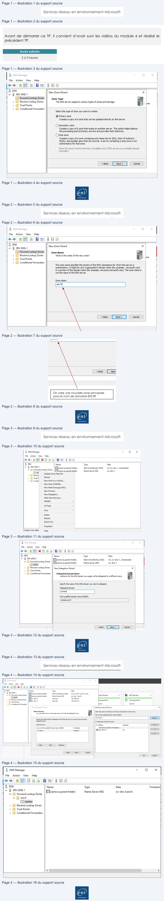
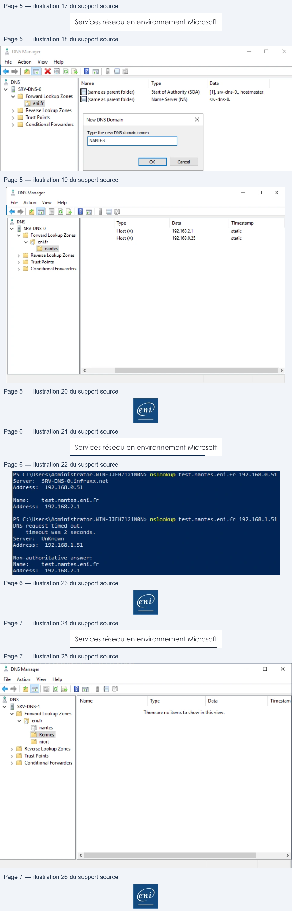

Transcription du document du Drive TSSR. La mise en forme est adaptée au Web ; les compléments IA du portail sont présentés séparément.
Services réseau en environnement Microsoft
TP du Module 06 – Le service DNS
Avant de démarrer ce TP, il convient d’avoir suivi les vidéos du module 6 et réalisé le
précédent TP.
Durée estimée
2 à 3 heures
Prérequis :
•
Avoir réalisé le TP précédent du Module 05.
L’objectif est de mettre en place une hiérarchie DNS :
•
Un domaine de 2e niveau : eni.fr
Page 1/7
© ENI – Tous droits réservés
& DNS Manager
.
gO
V
File
Action
View
Help
¢9|f5|6|\Bm| i aa
e
& DNS
New Zone Wizard
x
v à SRV-DNS-1
L] Forward Lookup Zones
Zone Type
> ©) Reverse Lookup Zones
The DNS server supports various types of zones and storage.
ne
> © Trust Points
> © Conditional Forwarders
Select the type of zone you want to create:
© Primary zone
Creates a copy of a zone that can be updated directly on this server.
© Secondary zone
Creates a copy of a zone that exists on another server. This option helps balance
the processing load of primary servers and provides fault tolerance.
OStub zone
Creates a copy of a zone containing only Name Server (NS), Start of Authority
(SOA), and possibly glue Host (A) records. A server containing a stub zone is not
authoritative for that zone.
Store the zone in Active Directory (available only if DNS server is a writeable domain
controller)
Lens|
Cas|
eni
Services réseau en environnement Microsoft
On crée une nouvelle zone principale
pour le nom de domaine ENI.FR
•
Un domaine de 3e niveau : nantes.eni.fr OU rennes.eni.fr OU niort.eni.fr
•
Neuf domaines de 4e niveau : res.nantes.eni.fr OU res.rennes.eni.fr …
Faites un clic droit sur la zone ENI.FR puis sur Nouvelle délégations.
Page 2/7
© ENI – Tous droits réservés
& DNS Manager
=
a
,
|
File
Action
View
Help
¢9%|\|4n| G\|Em| i aa
e
& DNS
New Zone Wizard
x
v à SRV-DNS-1
|
+) Forward Lookup Zones
Zone Name
> [M Reverse Lookup Zones
What is the name of the new zone?
ne
> © Trust Points
|
> 1 Conditional Forwarders
The zone name specifies the portion of the DNS namespace for which this server is
’
authoritative. It might be your organization's domain name (for example, microsoft.com)
or a portion of the domain name (for example, newzone.microsoft.com). The zone name is
A
not the name ofthe DNS server.
Zone name:
F
A
[set
—
eni
Services réseau en environnement Microsoft
Page 3/7
© ENI – Tous droits réservés
À, DNS Manager
_
a
x
File
Action
View
Help
eo
| 2m/XOGB/Em
as
&, DNS
Name
Type
Data
v Bi sons:
Fisame as parent folder)
Start ofAuthority
(SOA)
[1], srv-dns-1., host master.
v & Forward Lookup Zones || Flcameas parent folder)
Name Server (NS)
srv-dns-1.
_ E
en
Update Server Data File
> D Revers
> i Trusth
Reload
> © Condi
New Host (A or AAAA)...
New Alias (CNAME)...
New Mail Exchanger (MX)...
New Domain...
New Delegation...
Other New Records...
DNSSEC
>
All Tasks
>
View
>
Delete
Refresh
Export List...
Properties
Create anewdele
Help
& DNS Manager
-
o
x
File
Action
View
Help
@#o9\4m/\X8SS\Emli aa
&, DNS
Name
Type
Data
vi sev ONS
‘up?
Fltsame as parent folder)
Start of Authority (SOA)
[1] srv-dns-1,, hostmaster.
I Forward Lookup Zones |! FI
25 parent folder)
Name Server (NS)
srv-dns-1.
Sl enifr
> (Gi Reverse Lookup Zones || New Delegation Wizard
x
> [I Trust Points
> D Conditional Forwarders ||
Delegated Domain Name
Authority
for the DNS domain you supply will be delegated to a different zone.
Specify the name of the DNS domain you want to delegate.
Delegated domain:
Fully qualified domain name (FQDN):
.
Cam
Ce
ent
Services réseau en environnement Microsoft
Sur le second serveur DNS, créer la zone eni.fr puis ajouter le domaine NANTES
Page 4/7
© ENI – Tous droits réservés
& DNS
Manage
-
D
xPo
File
Action
View
Help
¢#9%\am/XOeGS\Emiaa
DNS
Name
ype
Data
vi SRV-DNS-1
Flisameas parent folder)
Start ofAuthority
(SOA)
[1], srv-dns-1.enifr, host...
=
A
Fomara bookup Zones ||](ame
as parent folder)
Name Server (NS)
srv-dns~t.enisr
peal Server
u
MAI Servers
Ù
ta verre Lookup Zones
Flsrv-dns-0
Host (A)
192.168.0.51
7
Ot
srv-dns-
lo
janageability
lanageability
Trust Points
PAsn-dns-1
Host (A)
192.168.1.51
> D Conditional Forwarders
ents
Events
New
Delegation
Wizard
< | edit Name Server Record
x
Name Servers
Enter the name of a DNS server that is authoritative for this zone.
You can select one or more name servers to host the delegated zone.
‘Server fully qualified domain name (FQDN):
a
‘Specify the names and IP addresses of the DNS servers you want to have host the
LT
eee
IP Addresses of this NS record:
Name servers:
IP Address
Validated
Delete
Server Fully Qualified Domain Name (FQON)
IP Address
<Click here to add an IP Address>
En
@ 2.168051
ox
w
Down
‘<Back
Next >
Cancel
œ
cancel
|
e
& DNS Manager
—
oO
x
File
Action
View
Help
eo fAmn\Oes\|bml i EG
e:
&
DNS
Name
Type
Data
Timestam
v
&
SRV-DNS-1
-
El
_
Fltsame as parent folder)
Name Server (NS)
srv-dns-0.eni.fr.
vy © Forward Lookup Zones
v © enifr
=) nantes
> [1 Reverse Lookup Zones
> ON Trust Points
> 1) Conditional Forwarders
<
>

Services réseau en environnement Microsoft
Créer des enregistrements de TEST. Tester la résolution de nom en envoyant la requête sur
l’un ou l’autre des deux serveur DNS.
Page 5/7
© ENI – Tous droits réservés
& DNS Manager
_
oO
.
File
Action
View
Help
e+2R|
XE 685 aa
& DNS
Name
Type
Data
¥ a Fe Lookup Z
Hisame as parent folder)
Start of Authority (SOA)
[1], srv-dns-0., hostmaster.
va omar
ookup Zones
Ftsame as parent folder)
NameServer (NS)
srv-dns-0.
=. enifr
> [1 Reverse Lookup Zones
> E Trust Points
New DNS Domain
x
>
Conditional Forwarders
Type the new DNS domain name:
[wes7]
a
À, DNS Manager
-
ao
x
File
Action
View
Help
e9\an/\9 SBIBm|i aa
& DNS
Type
Data
Timestamp
YA SRV-DNS-O
Host (A)
192.168.2.1
static
v ©) Forward Lookup Zones
Host (A)
192.168,0,25
static
v © enifr
[] nantes
> 1) Reverse Lookup Zones
> © Trust Points
> 1 Conditional Forwarders
<
>
eni
Services réseau en environnement Microsoft
Gestion des domaines :
•
Chacun des serveurs DNS prend en charge un des domaines de la hiérarchie.
•
Le domaine est géré sur le 1er serveur DNS et la redondance est assurée.
o Vous reportez les informations relatives au domaine (nom du domaine,
gestionnaire du domaine, adresses IP des serveurs DNS).
•
Validez le bon fonctionnement de la résolution et de la redondance sur le domaine
pris en charge avant de passer à l’étape suivante.
Page 6/7
© ENI – Tous droits réservés
PS C:\Users\Administrator.WIN-JIJFH7121N@N>
nslookup test.nantes.eni.fr 192.168.8.51
Server:
SRV-DNS-@. infraxx.net
Address:
192.168.6.51
Name:
test .nantes.eni.fr
Address:
192.168.2.1
PS C:\Users\Administrator.WIN-JIJFH7121N@N>
nslookup test.nantes.eni.fr 192.168.1.51
DNS request timed
out.
timeout
was
2
seconds
Server:
Unknown
Address:
192.168.1.51
Non-authoritative
answer:
Name:
test.nantes.eni.fr
Address:
192.168.2.1
ED
Services réseau en environnement Microsoft
Résolution des domaines de l’ensemble de la hiérarchie
•
Paramétrez chacun des serveurs pour permettre la résolution de l’ensemble des
domaines de la hiérarchie (domaine parent, enfant...)
•
Vérifiez le bon fonctionnement de la résolution sur l’ensemble de la hiérarchie.
•
Vous réaliserez un schéma montrant les chaînes de résolutions DNS.
Page 7/7
© ENI – Tous droits réservés
À, DNS Manager
—
Oo
x
File
Action
View
Help
e*%|42n/\SSS\Em|i aa
& DNS
Name
Type
Data
Timestam
v
qj SRV-DNS-1
v (55 Forward Lookup Zones
There are no items
to show in this view.
v El enifr
IN nantes
[1 Rennes
EX niort
>
(9) Reverse Lookup Zones
> [A Trust Points
>
(4) Conditional Forwarders
<
>
